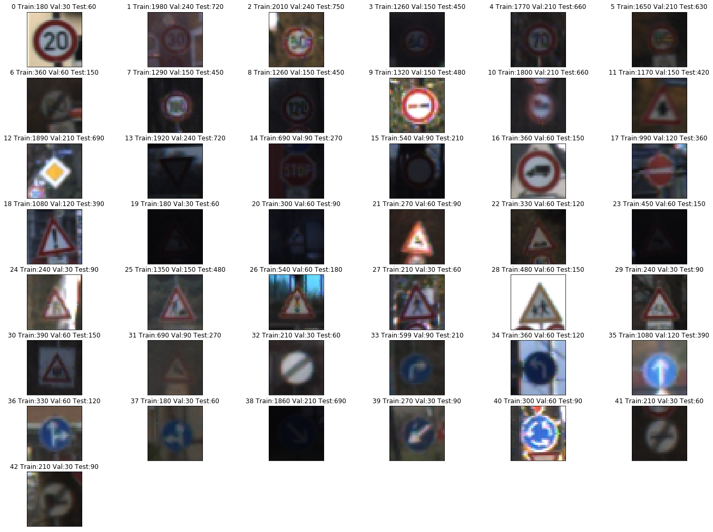
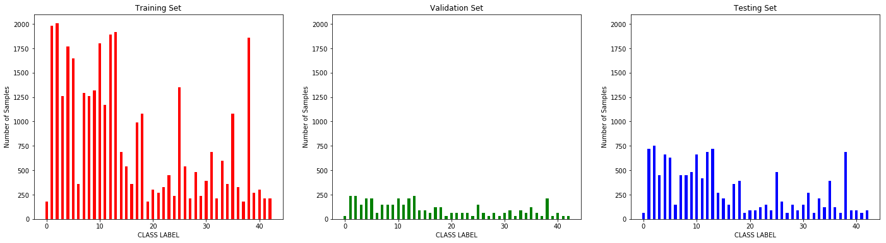
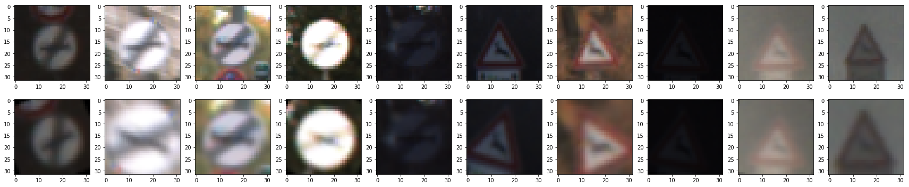
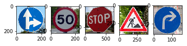
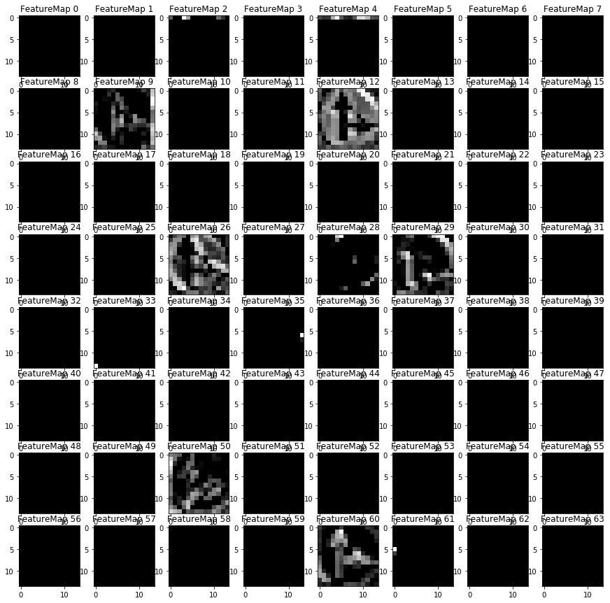

Traffic Sign Recognition
Programming Language:
- Python
The goals of this project are the following:
- Load the data set (see below for links to the project data set)
- Explore, summarize and visualize the data set
- Design, train and test a model architecture
- Use the model to make predictions on new images
- Analyze the softmax probabilities of the new images
- Summarize the results with a written report
Step1: Data Set Summary & Exploration
1. A basic summary of the data set.
I use Pickle data load function to read our dataset, and then use basic python function to analyze the dataset. In total, we have:
- Training samples: 34,799
- Validation samples: 4,410
- Testing samples: 12,630
- Each sample (image) has (32, 32, 3) shape.
- We have 43 unique classes/labels:
| ClassId | SignName | ClassId | SignName | ClassId | SignName |
| 0 | Speed limit (20km/h) | 1 | Speed limit (30km/h) | 2 | Speed limit (50km/h) |
| 3 | Speed limit (60km/h) | 4 | Speed limit (70km/h) | 5 | Speed limit (80km/h) |
| 6 | End of speed limit (80km/h) | 7 | Speed limit (100km/h) | 8 | Speed limit (120km/h) |
| 9 | No passing | 10 | No passing for vehicles over 3.5 metric tons | 11 | Right-of-way at the next intersection |
| 12 | Priority road | 13 | Yield | 14 | Stop |
| 15 | No vehicles | 16 | Vehicles over 3.5 metric tons prohibited | 17 | No entry |
| 18 | General caution | 19 | Dangerous curve to the left | 20 | Dangerous curve to the right |
| 21 | Double curve | 22 | Bumpy road | 23 | Slippery road |
| 24 | Road narrows on the right | 25 | Road work | 26 | Traffic signals |
| 27 | Pedestrians | 28 | Children crossing | 29 | Bicycles crossing |
| 30 | Beware of ice/snow | 31 | Wild animals crossing | 32 | End of all speed and passing limits |
| 33 | Turn right ahead | 34 | Turn left ahead | 35 | Ahead only |
| 36 | Go straight or right | 37 | Go straight or left | 38 | Keep right |
| 39 | Keep left | 40 | Roundabout mandatory | 41 | End of no passing |
| 42 | End of no passing by vehicles over 3.5 metric tons |

2. Here is an exploratory visualization of the data set.

Step2: Design and Test a Model Architecture
1. Image data preprocessing
I use two methods to do data augmentation (preprocessing).
- Randomly rotation: all training images have 50% probability to be rotated within (-30, 30) angle. Rotation is needed considering that in daily life, the camera on a self-driving car may capture a traffice sign with a radom angle. Thus, by doing this help the model has the capability of handling such an application scenario.
- Randomly crop: all training images have 50% probability to be cropped from (0.8, 1) of width and height. After being cropped, the images will be resized back to 32x32. Cropping is necessary because the captured traffic signs have variant sizes. Thus, using cropping adds more training data. In addition, randomly cropping provides some smaples with width and height shifts.
Here are some processed images: 
2. Model architecture
My model consisted of the following layers:
| Layer | Input_Size | Output_size | Description |
|---|---|---|---|
| Convolution(5x5) | 32x32x3 | 28x28x64 | (1x1) stride, VALID padding, Relu Activation |
| Convolution(3x3) | 28x28x64 | 28x28x64 | (1x1) stride, SAME padding, Relu Activation |
| Pooling | 28x28x64 | 14x14x6 | |
| Convolution(5x5) | 14x14x64 | 10x10x128 | (1x1) stride, VALID padding, Relu Activation |
| Convolution(3x3) | 10x10x128 | 10x10x128 | (1x1) stride, SAME padding, Relu Activation |
| Pooling | 10x10x128 | 5x5x12 | |
| Convolution(3x3) | 5x5x128 | 3x3x256 | (1x1) stride, VALID padding, Relu Activation |
| Pooling | 3x3x256 | 1x1x25 | |
| Flatten | 1x1x256 | 256 | |
| Fully Connected | 256 | 128 | Relu Activation |
| Dropout layer | |||
| Fully Connected | 128 | 43 | Softmax Activation |
3. Training parameters
I use the following experimental settings to train my model:
- Optimizer: Adam
- Initialial Learning Rate: 0.001
- Batch Size: 128
- Training Epochs: 100
- Loss function: cross entropy.
4. Accuracy
During training, I tracked the validation accuracy and only saved the weights achieved the highest validation accuracy. Within 100 training epochs, my architecture achieves the highest val_acc at 84 epoch. (All details about training process can be found in Cell [10])
- The accuracy on training set: 99.9%
- The accuracy on validation set: 96.2%
- The accuracy on testing set: 93.4%
The followings are the reasons why I chose such a model for this task:
- In the first convolutional laeyrs, the model focuses on detecting fundamental features, e.g. lines, shapes, or textures. Thus, at the first two blocks (4 convolutional layers), I used two continuous convolutional layers to make sure that the model generates more useful basic features.
- Following that, a block with one convolutional layer is used to generate semantic information, e.g. arrows, circles, and etc.. Comparing to the basic features, we have more semantic features, thus, more filters were used in this layer.
- A fully connected layer is used to convert a feature map into a verctor for classification.
- One Dropout layer is used to avoid overfitting.
Test a Model on New Images
1. Unseen data during traing
Here are five German traffic signs that I found on the web: 
2. Prediction results on these new traffic signs.
Here are the results of the prediction:
| Image Ground Truth | Prediction | Predicted Correctly |
| Go straight or right | Go straight or right | True |
| Speed limit (50km/h) | Speed limit (50km/h) | True |
| Stop | Yield | False |
| Road work | Road work | True |
| Turn right ahead | Turn right ahead | True |
The model was able to correctly guess 4 of the 5 traffic signs, which gives an accuracy of 80%. We can see it drops a lot comparing to the accuracy on our testing dataset. The reason is three-fold:
- The training dataset is not balance. For example, class 2 (Speed limit (50km/h)) has 2010 training samples, while class 14 (Stop) only consistes of 330 training samples.
- The downloaded images are much clearer than the images in our dataset, which may add more noise in the images.
- 5 images are not enough to evaluate the performance of a trained model.
3. Prediction details
For the first image, the model is 100% sure that it is a “Go straight or right”. It is correctly predict this image.
| Probability | Prediction |
| 1.0000000 | 36 (Go straight or right) |
| 2.8858561e-16 | 3 (Speed limit (60km/h)) |
| 2.1692284e-31 | 0 (Speed limit (20km/h)) |
| 7.6920753e-32 | 20 (Dangerous curve to the right) |
| 2.2140123e-32 | 28 (Children crossing) |
For the second image, the model is 100% sure that it is a “Speed limit (50km/h)”. It is correctly predict this image.
| Probability | Prediction |
| 9.9999976e-01 | 2 (Speed limit (50km/h)) |
| 2.8747601e-07 | 5 (Speed limit (80km/h)) |
| 2.2901984e-10 | 1 (Speed limit (30km/h)) |
| 2.2646303e-18 | 3 (Speed limit (60km/h)) |
| 4.5397839e-35 | 6 (End of speed limit (80km/h)) |
For the third image, the model is 100% sure that it is a “Yield”, while the ground truth is “Stop”. There are only 690 “Stop” training samples in our dataset, while “Yield” has 1290 training images. This is caused by our un-balance training data.
| Probability | Prediction |
| 1.0000000e+00 | 13 (Yield) |
| 4.3748559e-12 | 28 (Children crossing) |
| 1.5492816e-12 | 1 (Speed limit (30km/h)) |
| 1.0894177e-12 | 38 (Keep right) |
| 6.2159755e-13 | 2 (Speed limit (50km/h)) |
For the fourth image, the model is 100% sure that it is a “Road work”. It is correctly predict this image.
| Probability | Prediction |
| 1.0000000e+00 | 25 |
| 0.0000000e+00 | 0 (Speed limit (20km/h)) |
| 0.0000000e+00 | 1 (Speed limit (30km/h)) |
| 0.0000000e+00 | 2 (Speed limit (50km/h)) |
| 0.0000000e+00 | 3 (Speed limit (60km/h)) |
For the fourth image, the model is 100% sure that it is a “Turn right ahead”. It is correctly predict this image.
| Probability | Prediction |
| 9.9085110e-01 | 33 (Turn right ahead) |
| 8.0864038e-03 | 14 (Stop) |
| 1.0624588e-03 | 4 (Speed limit (70km/h)) |
| 2.1159234e-11 | 13 (Yield) |
| 7.8768702e-12 | 2 (Speed limit (50km/h)) |
Visualizing the model
I visulized the output of the first block. The circle and arrows are very clear. 